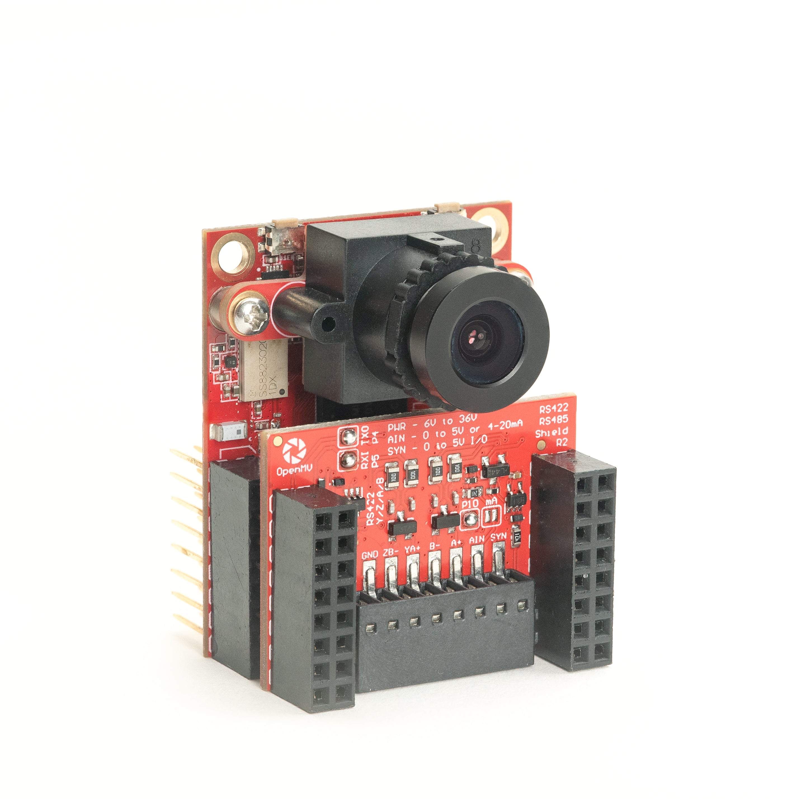
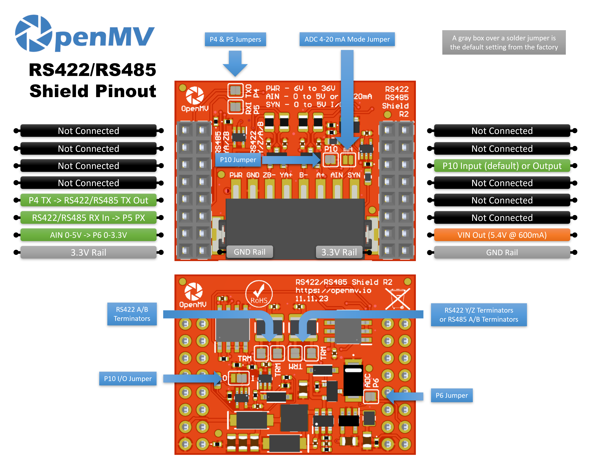

RS422/RS485 扩展板¶
RS422/RS485 扩展板为 OpenMV Cam 提供了一条适用于工业总线的远距离差分串行链路，具有宽输入电源、浪涌保护以及 ADC/数字 I/O。
{kind=link}

完整数据手册、照片以及订购信息请参见 RS422/RS485 扩展板产品页面。
亮点¶
10 Mb/s RS-422 或 RS-485，带板载端接
6-36 V 输入，具有反向电压容差
0-5 V ADC 输入，具有 ±36 V 过压保护
0-5 V 数字 I/O，用于摄像头同步触发，具有短路保护
引脚分布¶
{kind=link}

引脚参考¶
引脚 |
功能 |
|---|---|
P4 |
RS-422 / RS-485 TX → 驱动差分线输出 |
P5 |
RS-422 / RS-485 RX ← 接收差分线输入 |
P6 |
电平转换后的 AIN 回读（P6 上为 0–3.3 V） |
P10 |
SYN——接线端子上的开漏数字 I/O |
PWR 输入 |
接线端子上的 6–36 V 宽输入（具有反向电压容差） |
AIN 输入 |
接线端子上的模拟输入 |
VIN 输出 |
由板载稳压器提供 5.4 V、最高 600 mA |
3.3V 电源轨 |
为扩展板的板载电路供电 |
GND 电源轨 |
公共接地 |
备注
AIN 具有最高 ±36 V 的过压保护，默认为 0–5 V 电压输入，缩放到 P6 上的 0–3.3 V。短接扩展板正面的 4–20 mA 模式分流跳线，可将 AIN 切换为 4–20 mA 电流环输入。
备注
SYN 是一条开漏数字信号线，摄像头一侧上拉到 3.3 V，SYN 接线端子一侧上拉到 5 V。默认情况下它是输入——扩展板将 SYN 上的 0–5 V 电平转换到 P10 上的 0–3.3 V。更改板载焊接跳线可将 P10 翻转为输出，把 P10 上的 0–3.3 V 电平转换到 SYN 上的 0–5 V。
备注
P4、P5、P6 和 P10 中的每一个默认都通过焊接跳线连接到摄像头——断开你想重新用作无关用途的任意引脚上的跳线即可。P6 的跳线在扩展板背面；P4、P5 和 P10 的跳线在正面。
备注
板载端接电阻默认是连接的——断开相应的背面焊接跳线即可将其断开。两个用于 RS-422 A/B 对，两个用于 RS-422 Y/Z 对（同时兼作 RS-485 A/B 端接），总共四个跳线。
关于 RS-422 和 RS-485
这两种标准都将串行数据以平衡（差分）信号的形式通过双绞线发送，以实现远距离、抗噪声的链路：
RS-422 是基于四线的全双工。一个驱动器在标记为 Y/Z 的专用 TX 对上发送，对端则在标记为 A/B 的独立 RX 对上回传。每对一个发送器，最多十个接收器。
RS-485 通常是基于两线的半双工。发送和接收共用同一对线，在 RS-485 术语中称为 A/B，但在本扩展板上物理上就是同一条 Y/Z 线。最多三十二个节点可以共享总线，其中任何一个都可以驱动它。
扩展板如何同时支持两者
扩展板搭载两个 THVD1426 收发器，每个都能处理任一标准：
第一个收发器 驱动 Y/Z 对（同时兼作 RS-485 A/B 对）。它是唯一接通了驱动器的，因此无论何种模式，摄像头的所有出站流量都从这一对发出。
第二个收发器 驱动 A/B 对。它的驱动器被关断——该收发器仅用于接收，只在 4 线 RS-422 模式下才有意义。
两个收发器的接收器始终启用，它们的 RX 输出经过与（AND）运算后合并到一条返回摄像头的接收线上：
在 2 线 RS-485 模式 下，只有第一个收发器处于活动状态。将总线接到 Y/Z；A/B 一侧处于空闲，与门只是把第一个收发器的 RX 直接传过去。
在 4 线 RS-422 模式 下，对端在 A/B 对上向摄像头发送（由第二个收发器拾取），而摄像头在 Y/Z 上发送（第一个收发器自己的接收器会把它的发出数据回显回来）。与门将两者合并——任一对出现低电平脉冲（起始位、数据）都会到达摄像头。
接线端子标签反映了这种双重映射：
RS-422（4 线）——TX 在 Y/Z 上输出，RX 在 A/B 上输入。
RS-485（2 线）——TX/RX 共用 Y/Z 对（在 RS-485 术语中即 A/B）。扩展板上的 A/B 接线端子保持不接。
用法¶
备注
下面的 UART(3) 外设编号遵循 STM32 的映射。在其他处理器上，接到这些引脚的总线可能不同——请查阅你板卡的参考资料。
在 P4（TX）/ P5（RX）上与差分串行对端通信:
from machine import UART
uart = UART(3, baudrate=115200)
uart.write("hello\n")
print(uart.read())
通过电平转换后的 P6 引脚读取 AIN 接线端子输入:
from machine import ADC
import time
ain = ADC("P6")
while True:
v = ain.read_u16() * 3.3 / 65535
print("AIN:", v * (5.0 / 3.3), "V")
time.sleep_ms(100)
对 SYN 线上的下降沿做出响应——例如，将摄像头与另一台拉低 SYN 的设备同步:
from machine import Pin
def on_sync(pin):
print("SYN falling edge")
syn = Pin("P10", Pin.IN)
syn.irq(on_sync, Pin.IRQ_FALLING)